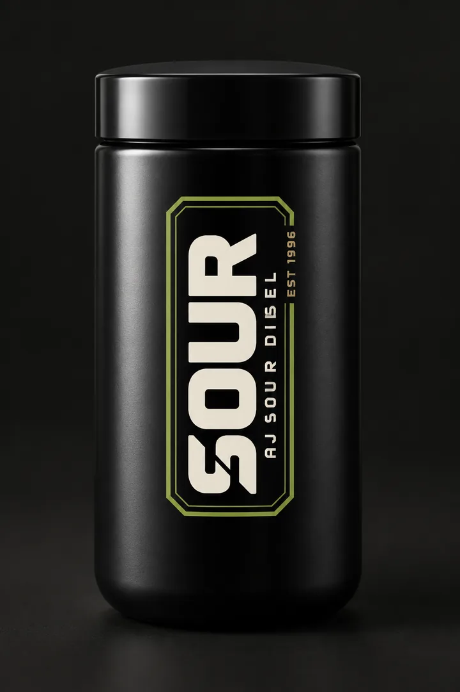
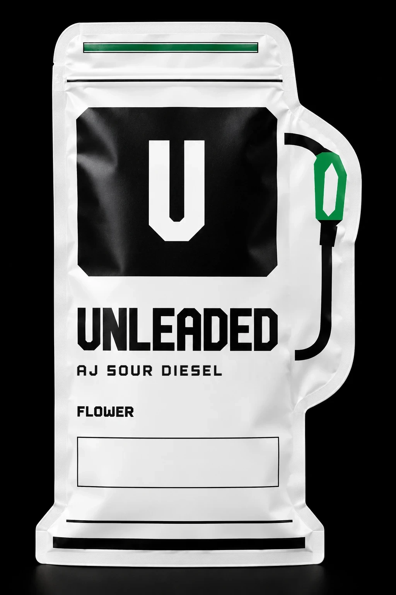
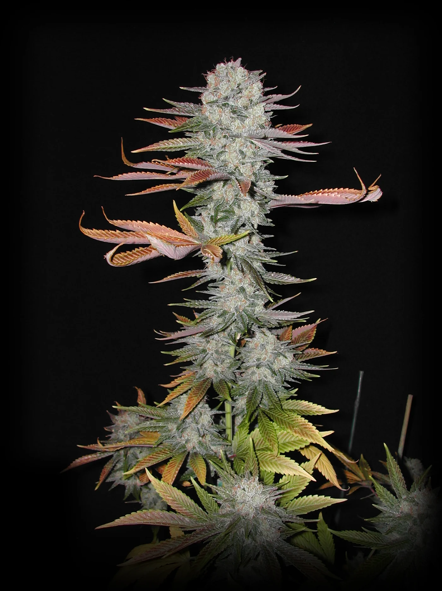

Concept render
by AJ Sour Diesel
Satin black jar. The plate on the front: the cut-S wordmark, AJ Sour Diesel, Est 1996. Nothing else.
One name.
Two expressions.
SOUR in the black jar. Unleaded in the pump pouch. Both from AJ’s cut of Sour Diesel.
The keeper

The keeper
Joe “AJ” Murray has grown his cut of Sour Diesel since 1996.

AJ’s cut, 2002.
In its New York heyday the cut commanded “up to $15,000 a pound”, as Forbes reported. Rolling Stone calls AJ its “propagator and keeper”. Leafly credits him as the man who popularized it on the East Coast.
AJ on First Smoke of the DayThe line
AJ dates his cut of Sour Diesel to 1996. The plate carries the year.
Up to $15,000 a pound, as Forbes later reports.
AJ photographs his cut of Sour Diesel, 26 August 2002.
High Times puts Sour Diesel on its all-time list.
MERRY JANE films AJ.
Leafly’s best-selling strains in the United States, across producers.
Licensed to FlowerHouse, AJ’s Sour Diesel reaches New York shelves the first week of December. Leafly reviews it the same month.
Forbes in February, Rolling Stone in August.
Sour Diesel climbs to fourth on Leafly’s list.
The record
Sour Diesel on Leafly’s list of the best-selling strains in the United States. Strain rankings across producers.
Licensed to FlowerHouse, AJ’s Sour Diesel reached New York shelves the first week of December 2023. With under thirty days of sales, it finished the sixth best-selling strain in the state for 2023.
Forbes, citing Headset ↗Two expressions
SOUR is the premium expression, in the black jar. Unleaded is the second, in a pouch cut in the shape of a pump.
by AJ Sour Diesel
Satin black jar. The plate on the front: the cut-S wordmark, AJ Sour Diesel, Est 1996. Nothing else.
The pouch is cut as a pump: shoulder, nozzle, hose. The U sits in its window. White film, black print, a green zipper.

Everybody has a Sour Diesel.
You’ll know when you have the real one.
Press
Contact